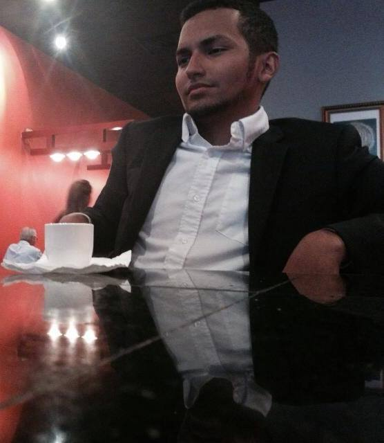

Mecha Albizu
O P
Gensu
Leolrath
Kuro
Kyonop
I could probably spend most of my day talking about myself, but I guess I'll keep it short. I've been playing league of legends for about 3 years. At first, I didn't really take the game seriously because my focus was on my programming career but I played it consistently enough to where I was doing well for myself. After a while, it just sorta became an escape from family problems and I guess that's where I started to get good at what I was doing. When I was in NA, I reached gold just before switching over to LAN. In LAN, I climbed back into gold in Season 3. I really didn't like playing ranked, I just liked playing with my friends. However, ever since Season 4 started, I've taken the game much more seriously and decided to put my money where my mouth is. I've been in platinum and decided to create Vero Noctis after another attempt at making a team. After recruiting Leo and Gensu, both of which were long time friends, I sought out a support and a mid laner. I've been leading Vero Noctis ever since.
Personal Achievements:
Codetrotters fellow
Platinum II ranking
Subbed for URF R' US
Team Achievements:
Third place in U.N.E Invitationals.
First place in Torneo Arigato AOI.
Third place in Liga MOLV.
Hometown: Manati, PR
Gender: Male
Age: 21
Occupation: Computer Science student/Freelance Web Developer